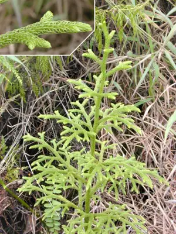

pranet · 出典付きの植物図鑑
垂穗石松
Palhinhaea cernua (L.) Vasc. & Franco · Lycopodiaceae

Palhinhaea cernua, synonym Lycopodiella cernua and Lycopodium cernuum, is a plant in the family Lycopodiaceae, commonly known as the staghorn clubmoss. The Hawaiian name for the plant is wāwaeʻiole, or "rat's foot". It has a substantial number of scientific synonyms in several genera. The genus Palhinhaea is accepted in the Pteridophyte Phylogeny Group classification of 2016, but not in other classifications which submerge the genus in Lycopodiella. It is the largest of the clubmosses, having rhizomes up to 5 m (16 ft) in length, with leafy uprights up to 2.5 m in height.
出典: Wikipedia 英語版「Palhinhaea cernua」 · CC BY-SA 4.0
異名: Lepidotis cernua (L.) P.Beauv., Lycopodiella cernua (L.) Pic.Serm., Lycopodium boryanum A.Rich., Lycopodium capillaceum Spring, Lycopodium cernuum L., Lycopodium cymosum (Fée) L'Herm. ex Hieron., Lycopodium dichotomum Blanco, Lycopodium ericinum Ces., Lycopodium heeschii Müll.Hal., Lycopodium hupeanum Müll.Hal., Lycopodium marianum Willd., Lycopodium moritzii Müll.Hal., Lycopodium polycephalum Colenso, Lycopodium pullei Alderw., Lycopodium salakense Treub, Lycopodium secundum Müll.Hal., Lycopodium sikkimense Müll.Hal., Lycopodium suffruticosum (Alderw.) Herter, Lycopodium veneris Herter, Lycopodium vulcanicum Blume
同定や利用は自己責任でお願いします。この図鑑だけを根拠に野生の植物を食べないでください。
出典
- 学名: World Flora Online Plant List 2026-06 · CC0 1.0
- 名前: Wikipedia の記事名と Wikidata · CC0 1.0（Wikidata）。記事名は事実
- 説明: Wikipedia 英語版「Palhinhaea cernua」 · CC BY-SA 4.0
- 食用・毒性: World Checklist of Useful Plant Species (Diazgranados et al. 2020, RBG Kew) · CC BY 4.0
- 分布: World Checklist of Vascular Plants (WCVP), RBG Kew, version 2026-06-04 · CC BY 3.0
このページは pranet のデータから自動生成しています。コードは MIT、データは項目ごとのライセンス（説明）。